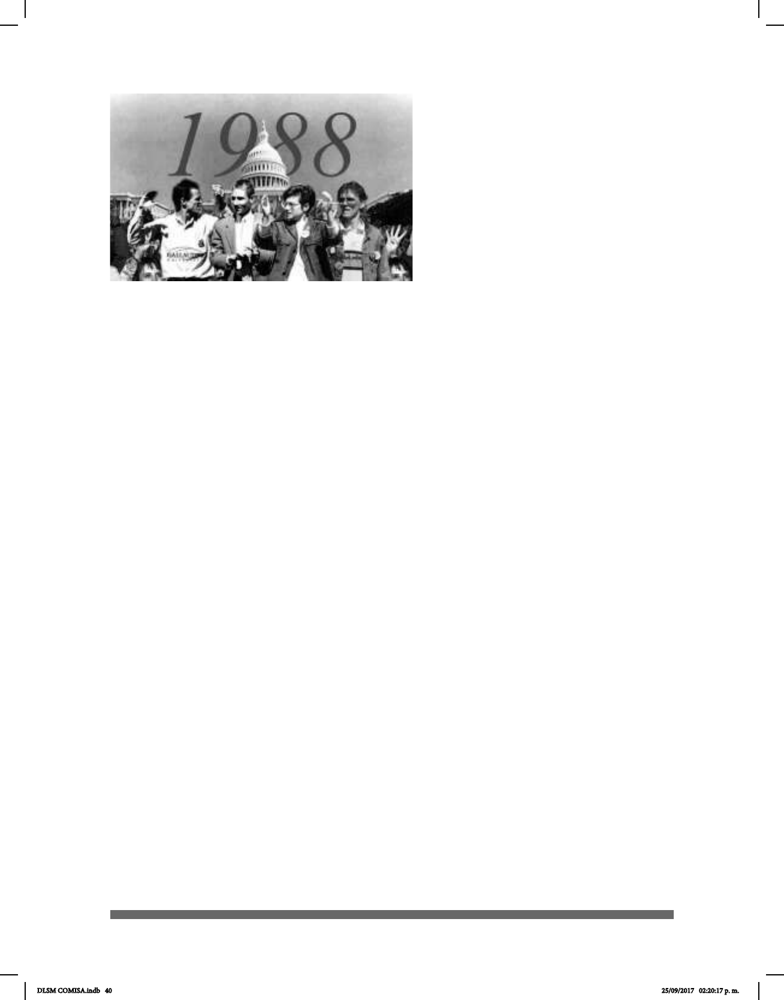

40
Entre los años setenta y
ochenta se gestó un gran movimiento
académico en el que se consideraba a
la Lengua de Señas como una Lengua
Natural, por lo que las comunidades
sordas se entendían como minorías l
ingüísticas y culturales. En medio de este
movimiento, en marzo de 1988,
la Universidad de Gallaudet fue
escenario de una protesta por parte de los
estudiantes: “Presidente Sordo
Ahora” (Deaf President Now, DPN);
en ella en se logró la integración y
participación de estudiantes,
asistentes en general y la comunidad sorda con un propósito claro: los estudiantes
habían solicitado que el Presidente de la Universidad fuera una persona sorda y tenían
a más de 100 personas sordas con doctorado y puestos administrativos para la
elección. Sin embargo, el 6 de marzo de 1988 se eligió a un “Presidente oyente” y esta
situación provocó el descontento.
Una semana más tarde, el Dr. King Jordan fue elegido octavo Presidente de la
Universidad de Gallaudet y primer Presidente sordo; las demandas de los estudiantes
fueron aceptadas: lograron la integración de la comunidad sorda en diferentes puestos
y actividades de la Universidad, así como efectos que persisten hoy en día alrededor
del mundo pues permitieron que la sociedad conociera los derechos y habilidades de
las personas sordas e hipoacúsicas.
El Dr. Jordan acuñó la frase que posteriormente se hizo mundialmente famosa: “La
persona Sorda puede hacer todo, excepto oír”.
Consigna: “Deaf President Now”
en la Universidad Gallaudet
Declaración de Salamanca, España 1994
En la Declaración de Salamanca se plasmó el marco de acción sobre las
necesidades educativas especiales, en ella participó la Organización de las
Naciones Unidas para la Educación, la Ciencia y la Cultura (UNESCO). Ahí se
proclamó entre otros puntos que cada niño tiene características, intereses,
capacidades y necesidades de aprendizaje que le son propios y se
establece en el artículo 21, que las políticas educativas deberán tener en cuenta las
diferencias individuales y las distintas situaciones. De éste modo logrará
garantizar que todos los sordos tengan acceso a la enseñanza .
Desde 1880 hasta 1994 con la Declaración de Salamanca, España, en vista
de la evidencia de los progresos académicos, lingüísticos y emocionales de los
niños sordos hijos de sordos y con la evidencia de las investigaciones que los
doctores Edward Klima y Ursulla Bellugi habían realizado, se quitó la prohibición
del uso de la lengua de señas en el mundo. A este período se le llama en la
cultura sorda “Los cien años de silencio” (Klima & Bellugi, 1979).
DLSM COMISA.indb 40 25/09/2017 02:20:17 p. m.